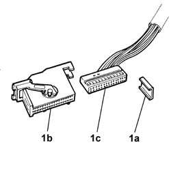
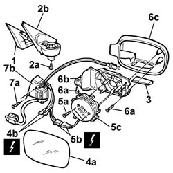

7005R31 Electrically operated EXTERIOR REAR VIEW MIRROR (one), left or right, detached - Dismantling and reassembly
- Path
- Procedures > 70 FITTINGS > 7005 passenger compartment front side doors > 7005R FRONT DOOR MIRRORS > 7005R31 Electrically operated EXTERIOR REAR VIEW MIRROR (one), left or right, detached - Dismantling and reassembly
- Kind
- repair procedure (removal / refitting; the operation number is the code)
- Applies to
- all engines; all production periods
- Interactive page
- https://sloeber94.github.io/elrnDB-lThss/en/#/109202
Applies to: all engines; all production periods
 Removing
Removing
 Refitting
Refitting1. Release the retaining plate (1a) and release the shell (1b) for the electrical connector (1c) for the door mirror.

Applies to: all engines; all production periods
1. Keep the sound insulation.
2. Undo the fixing bolts (2a) and detach the door mirror support (2b) from the actual door mirror, releasing the electrical wiring.
3. Release the protection for the courtesy light in the door mirror and remove it.
4. Release the reflector (4a) and disconnect the electrical connectors (4b).
 | Description | Connector |
|---|---|---|
4b | Left external rear view mirror | P060 |
| Description | Connector |
|---|---|---|
4b | Right external rear view mirror | P061 |
5. Undo the bolts (5a), disconnect the electrical connector (5b) and remove the door mirror adjustment device (5c).
| Description | Connector |
|---|---|---|
5b | Left external rear view mirror | P060 |
| Description | Connector |
|---|---|---|
5b | Right external rear view mirror | P061 |
6. Undo the fixing bolts (6a) and separate the door mirror folding motor support (6b) from the mirror cover (6c).
7. Undo the bolts (7a) and separate the mirror folding motor (7b) from the support.

Applies to: all engines; all production periods
Refitting
Removing- Check the condition of the electrical wiring.
- If necessary, conduct continuity tests.
- Restore the electrical wiring routing.
- Fit the door mirror folding motor in positin and secure it using the bolts.
- Fit the door mirror folding motor support in the housing inside the actual door mirror cover.
- Connect the electrical connector and position the door mirror adjustment motor, securing it using the bolts.
| Description | Connector |
|---|---|---|
. | Left external rear view mirror | P060 |
| Description | Connector |
|---|---|---|
. | Right external rear view mirror | P061 |
- Connect the electrical connections and fit the reflector for the door mirror on the mirror adjustment motor.
| Description | Connector |
|---|---|---|
. | Left external rear view mirror | P060 |
| Description | Connector |
|---|---|---|
. | Right external rear view mirror | P061 |
- Fit the protection for the courtesy light on the door mirror.
- Place the sound insulation in position.
- Fit the shell on the door mirror electrical connector and position the retaining plate.